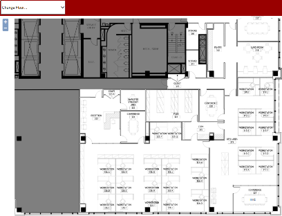

MeetingPlanner FloorPlanner allows users to quickly reserve and view available meeting rooms from a mobile phone or digital display. It synchronizes and can be used in conjunction with Outlook/Exchange and all MeetingPlanner software.

| icon | DESCRIPTION |
|---|---|
| Available Rooms |
| Rooms In Session (therefore, NOT available) |


NOTE: All meetings and updates created in FloorPlanner synchronize with MeetingPlanner software.